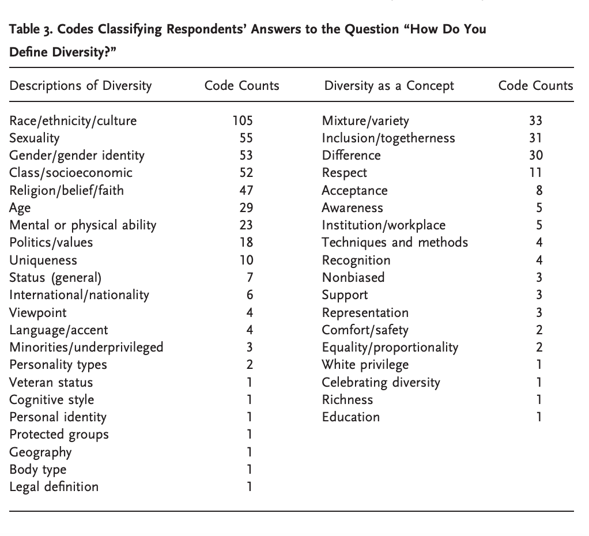
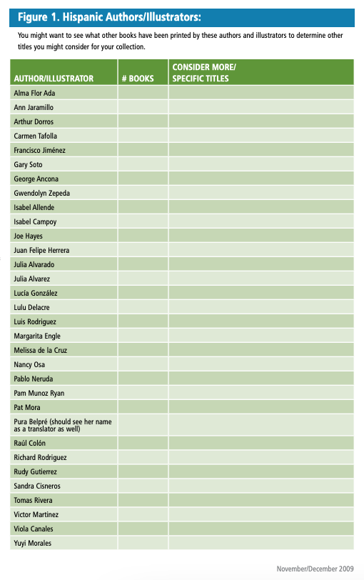

Introduction
The Association of Research Libraries (ARL) has written standards for member libraries regarding diversity, inclusion and equity. In this program, I'm grateful to have had the opportunity to learn how to design programs and seek opportunities to provide additional programming for different library patron groups. I've provided as evidence two projects in which I found opportunities for additional programming. In the first project, I outlined how through web design, reference service can provide more interactive asynchronous and synchronous services for those lacking or hesistant to gain digital skills. In the second project, I explained how programs like makerspaces and club meet-ups can provide increased inclusion for teens with signs of depression or anxiety. Both pieces of evidence are supported with ongoing research on diversity, inclusion and equity within the LIS profession.
Diversity
Dozier et al. (2022) evaluate the diversity statements of ARL member institutions for their alignment with ARL (Association of Research Libraries) priorities, the fourth of which is "diversity, equity and inclusion." Dozier et al also comments on the general diversity of the LIS profession, stating that it "remains largely white," and that diversity statements help LIS professionals align their goals with ARL priorities. Diversity statements were analyze for their visibility, content, connection to LIS personnel, and history/precedent (p. 281). Dozier et al. (2022) found 52% of ARL libraries to have diversity statements on their webpages, although the majority echoed the diversity statements of their larger university or institution (p. 293). In the future, more libraries should work to provide unique, individual diversity statements. With clear diversity statements functioning as a standard by which the library is expected to operate, we can hold ourselves accountable to make steps toward increased diversity.
LIS professionals also need to act on their diversity statements. To the left, Table 3 from Adkins et al. (2015) shows how LIS professionals define diversity (p. 147). Most define "diversity" as a concept concerning different races and ethnicities, when it should include all items on this list, and more generally: "challenging...ideas of comfort and safety, going from the known to the unknown" (p. 148). Adkins et al. studied "how...librarians learn about diversity," specifically from their education, professional organizations, and life experiences (p. 139). Ninety percent of LIS professions reported personal experience as a method of learning about diversity (142). And while many LIS programs offer diversity courses, only 10% were required (p. 143). Diversity within the LIS profession is an ongoing issue that the group is working to solve. The LIS profession lacking extensive diversity is a two-fold issue: different ethnic, financial, religious, gender,and other groups may not feel comfortable in a library lacking representation, and LIS professionals aren't able to learn how to provide inclusion and targeted services for a diverse community.
Inclusion
{kind=link}
{kind=link}
Bailey (2009) created a standard guideline measuring the inclusion of Hispanic culture into libraries. On the left, Figure 1 shows a list of Hispanic authors who have made significant contributions to literature, and the number of books by these authors in various libraries.
Dr. Lea Bailey is a librarian in Irving, Texas, which has a large Hispanic population. 41% of the Irving population is Hispanic, which makes this group the second largest in the area (World Population Review, 2022). Mexican and Salvadoran groups are the largest within Irving's Hispanic population (World Population Review, 2022). It is undeniable that Hispanic groups make up a significant portion of libraries' surrounding communities in this area of Texas, demonstrating the need for Baily's 2009 study. This methodical, measured analysis of inclusion is an excellent way of determining if a library is inclusive of its community's cultures.
Equity issues among patrons:
In the latest issue of the journal American Libraries, LIS professionals have discussed the growing gap in digital equity in the United States, and how libraries can help bridge this gap. This is one equity issue among many.
According to American Libraries, and their research using PEW and Census data, "19 million households [in the United States] lack access to fixed broadband service at threshold speed" ("Digital equity," p. 30). Additionally, among adults with "incomes below $30,000 a year: 1 in 4 don't own a smartphone," and "4 in 10 don't have home broadband services," which on average costs $60 per month ("Digital equity," p. 30). Broadband services (which provide access to the internet) are more likely to be found in white households, considering 80% of white adults have a broadband connection, while only 71% of black adults and 65% of hispanic adults have a broadband connection ("Digital equity," p. 31). While money is part of the issue preventing some from having Internet access, a lack of "digital skills training" and an understanding of the Internet and its benefits are other reasons why some go without the Internet ("Digital equity," p. 31).
However, the digital realm is quickly becoming more essential to education, workplaces, shopping, and leisure. QR codes, apps to supplement experiences, online sign-up forms, and multimedia learning experiences are useful tools, yet do not accommodate as many people as typically considered. Luckily, the library (public, school, academic, special) is well-suited to provide Internet access and "digitla skills training" freely to those who need it ( American Libraries, 2022, p. 31).
Equity issues among employees:
Librarians need to continually protect themselves in the workforce. Balzer (2022) recounts the times and places where librarians have unionized to get better pay and treatment over the past two decades. As one librarian said in Balzer's article: "'The thing is that people learn right away that this is not an information problem,' Kahn says. 'It's not that the employer doesn't know that we're underpaid of doesn't know that we're upset about some of our own working conditions. It's a lack of political will to change these things'" (2022, p. 19).
Evidence
1) Essay: The Future of Reference
 Reference essay
Reference essay
My first piece of evidence is a paper entitled: "The Possibilities of Reference in our Information-filled, Technologically Advanced future." I wrote this paper in INFO 210: Reference Information Services. In this paper, I argue that future, asynchronous reference services will better incorporate information literacy skills in order to make users better independent researchers. With more interactive reference services, a wider range of patrons with varying internet abilities.
I start this paper by quoting Sonja, one of my coworkers at my museum. She has told me multiple times how much she dislikes using computers and handling general technology or tools. However, one day, she told me:
Two things about this conversation: 1) Sonja is a costume designer, and I was asking her how she got some interesting fabric for an art project she showed me. 2) Sonja doesn't know that I also work at a library, nor that I am in a library science program.
When I heard that she found a reason to become an expert at information searching, I realized that I had encountered an equity issue. I thought that people who resisted technology and the Internet did so intentionally, and would not respond to library instruction or reference efforts. However, even if the former point is true, the latter is not. Even if a portion of the population has a big learning curve to overcome when it comes to finding the Internet useful, they can do it, with the right help. Sonja learned how useful Ebay is, all by herself. Sonja proved to me that more equitable and inclusive library services can help others find reasons to use the internet as well.
In the rest of the paper, I explain how reference librarianship is not going to be replaced by something new, and is deserving of equitable treatment and respect among librarians overall. Reference service can garner increased recognition through the inclusion of new elements, such as: inclusive web design (language availability, organization, ease of use), improved web design (fully utilizing the potential of website-building languages like Javascript, PHP, HTML and CSS), collaborative tutoring, various levels of reference interactions, and an increased attention to patrons' areas of interest. I elaborate upon each new element and how each can benefit librarianship overall.
I included this piece of evidence to demonstrate how digital literacy is not something everyone has, and that library services can better assist people who are more uncomfortable using computers and the internet.
2) Final paper: Information Communities
Information community: Teens expressing symptoms of depression
In this paper, entitled: "Adolescents with Symptoms of Depression, Anxiety or Both: An Analysis of This Information Community’s Needs, Behaviors, Environment, Support System and Services," I discuss ways that library professionals can better serve this community.
In this paper, I researched the needs of adolescents with symptoms of depression, anxiety, or both. With the support of experts across disciplines, including pyschology, education and statistics, I connected this group's needs with the proper library services and practices. I found that the library is uniquely suited to support teens with depression or anxiety (or both). Librarians can support this group with makerspaces, spaces for groups to gather and be themselves, social media art with helpful bits of information, and access to needed information. As a result of writing this paper, I strongly believe that librarians should actively work to be welcoming and inclusive of all patron groups. With steadily progressing technology, increased access to information, and increased connectedness within communities, libraries will continue to be well-suited to serve all communities.
I chose to include this piece of evidence in this competency because I researched and and explained the needs of a library patron group with which I was previously unfamiliar.
Conclusion
I'm grateful to have had the opportunity to study topics within diversity, inclusion and equity. In the future, I plan to learn from more communities with which I am unfamiliar. This is from Adkins et al. (2015), when they state that embracing diversity as a concept comes from "challenging...ideas of comfort and safety, going from the known to the unknown" (p. 148). I am actively working to do this: I am improving my conversational Spanish by assisting Spanish-speaking patrons upon request in my workplace, and learning new concepts and terms from willing patrons. Additionally, I am getting the paperwork ready to join "The Beat Within," a nonprofit which publishes a biweekly magazine written by youth in juvenile hall. Members of this nonprofit meet at juvenile halls for a weekly, one-hour writing workshop where they help interested youth find their voice and gain confidence in their writing. This summer, I am scheduled to assist in these one-hour workshops. There are many more communities that need recognition, inclusion, and opportunities to gain equity in the library. Aligning oneself with likeminded individuals and sharing perspectives is a great exercise in becoming increasingly supportive of diversity, inclusion, and equity in patrons and workers.
References
Adkins, D., Virden, D., & Yier, C. 2015. Learning about Diversity: The Roles of LIS Education, LIS Associations, and Lived Experience. Library Quarterly 85(2), 139–49. DOI: 10.1086/680153
Albanese, A.R., & Kenney, B. (2016, August 26). The Changing World of Library Reference. Publishers Weekly.
American Libraries. (2022). Digital equity. American Libraries. 53(3/4), 30-31. Link.
Balzer, C. (2022). Getting organized: More library staffers are turning to unions for security and social equity. American Libraries 53(3/4), 16-19. Link.
Berk, J. (2014). Mental health training in public libraries. Public Libraries 53(6), 34-37. Link.
Dozier, V., Fabiku, A., & Enimil, S.A. (2022). Critical analysis of ARL member institutions’ diversity statements. Copley Library: Faculty Scholarship. 10. https://digital.sandiego.edu/library_facpub/10
Wong, P. (2022). We must lead on digital equity. American Libraries 53(3/4), 6. https://americanlibrariesmagazine.org/2022/03/01/we-must-lead-on-digital-equity/
World Population Review. 2022. Irving, Texas Population 2022. https://worldpopulationreview.com/us-cities/irving-tx-population Retrieved March 24, 2022.
Xie, B., & Bugg, J.M. (2009). Public library computer training for older adults to access high-quality Internet health information. Library & Information Science Research 31(3), 155-162. 10.1016/j.lisr.2009.03.004